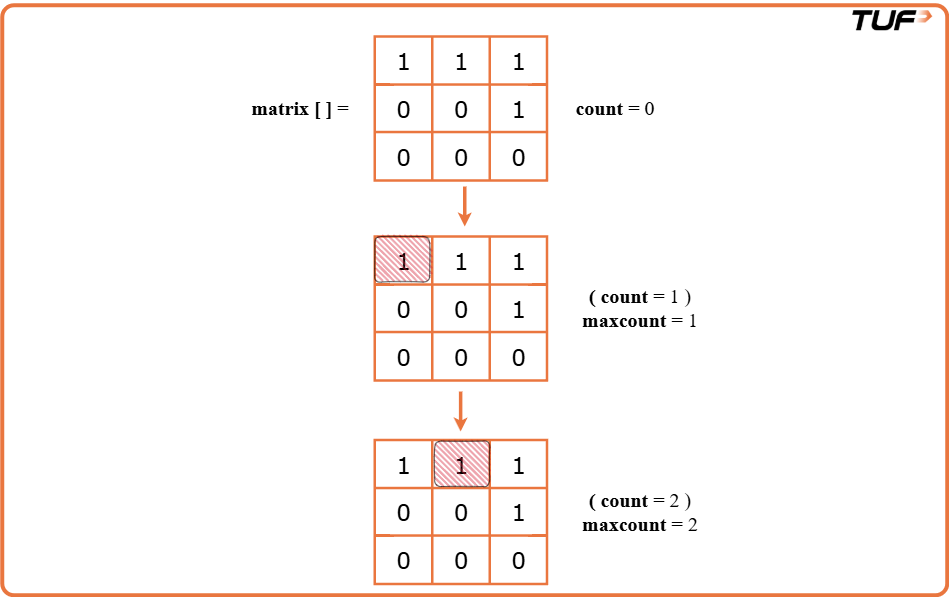
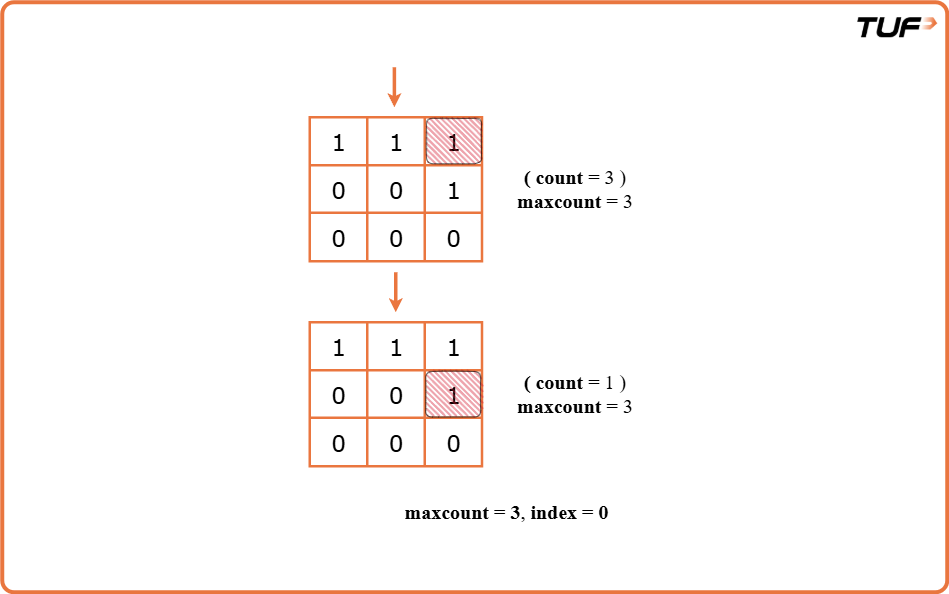

Find the row with maximum number of 1's
Problem Statement: You have been given a non-empty grid ‘mat’ with 'n' rows and 'm' columns consisting of only 0s and 1s. All the rows are sorted in ascending order. Your task is to find the index of the row with the maximum number of ones. Note: If two rows have the same number of ones, consider the one with a smaller index. If there's no row with at least 1 zero, return -1
Examples
Example 1:
Input Format: n = 3, m = 3,
mat[] =
1 1 1
0 0 1
0 0 0
Result: 0
Explanation: The row with the maximum number of ones is 0 (0 - indexed).
Example 2:
Input Format: n = 2, m = 2 ,
mat[] =
0 0
0 0
Result: -1
Explanation: The matrix does not contain any 1. So, -1 is the answer.
Disclaimer: Here is the practice link to help you assess your knowledge better. It's highly recommend trying to solve it before looking at the solution.
Brute Force
Algorithm
Intuition
The intution is to traverse the matrix as usual using nested loops and for every single row count the number of 1’s. Finally, we will return the row with the maximum no. of 1’s. If multiple rows contain the maximum no. of 1’s we will return the row with the minimum index.Approach
- First, we create two variables: cnt_max is set to 0 and will keep track of the highest number of 1s found so far, and
indexis set to -1 and will store the row number with the most 1s. - Then, we go through each row of the matrix one by one using a loop.
- Inside that loop, for each row, we count how many 1s it contains using another loop.
- If this count is higher than our current maximum cnt_max, we update cnt_max with this new count and set indexto the current row number.
- At the end, we return the index. It will either be the row number with the most 1s, or -1 if no 1s were found.


Code
#include <bits/stdc++.h>
using namespace std;
// Define a class to encapsulate the method
class Solution {
public:
int rowWithMax1s(vector<vector<int>> &matrix, int n, int m) {
int cnt_max = 0; // Max number of 1s found
int index = -1; // Index of row with most 1s
// Traverse each row of the matrix
for (int i = 0; i < n; i++) {
int cnt_ones = 0; // Count 1s in current row
for (int j = 0; j < m; j++) {
cnt_ones += matrix[i][j];
}
// Update if this row has more 1s
if (cnt_ones > cnt_max) {
cnt_max = cnt_ones;
index = i;
}
}
return index;
}
};
int main() {
vector<vector<int>> matrix = {{1, 1, 1}, {0, 0, 1}, {0, 0, 0}};
int n = 3, m = 3;
Solution obj;
cout << "The row with maximum no. of 1's is: " << obj.rowWithMax1s(matrix, n, m) << '\n';
}
Complexity Analysis
Time Complexity:O(n X m), where n = given row number, m = given column number. We are using nested loops running for n and m times respectively.
Space Complexity: O(1). No extra space used
Optimal Approach
Algorithm
Intuition
We will use Binary Search to make our solution more efficient. While we still need to check each row one by one, we can speed up how we count the 1s in each row. Instead of going through every element in a row to count the 1s, we find the position of the first 1 using Binary Search, and subtract that index from the total number of columns to get how many 1s are present.
Approach
- Start by keeping track of the highest number of 1s seen so far and the row where that occurred.
- Go through each row of the matrix one by one.
- For each row, use Binary Search to find the first position where a 1 appears. Then subtract that position from the total number of columns to get the number of 1s in that row.
- Compare the current row's number of 1s with the highest found so far. If it's greater, update the highest count and the corresponding row number.
- After checking all rows, return the row number where the highest number of 1s was found. If there are no 1s at all, return -1.
Code
#include <bits/stdc++.h>
using namespace std;
class Solution {
public:
// Binary search to find the first index where value >= x
int lowerBound(vector<int> &arr, int n, int x) {
int low = 0, high = n - 1;
int ans = n; // Default if x not found
while (low <= high) {
int mid = (low + high) / 2;
if (arr[mid] >= x) {
ans = mid; // Possible answer
high = mid - 1; // Look for smaller index
} else {
low = mid + 1; // Search right half
}
}
return ans;
}
// Find row with max number of 1s
int rowWithMax1s(vector<vector<int>> &matrix, int n, int m) {
int cnt_max = 0;
int index = -1;
for (int i = 0; i < n; i++) {
int cnt_ones = m - lowerBound(matrix[i], m, 1); // 1s = total - index of first 1
if (cnt_ones > cnt_max) {
cnt_max = cnt_ones;
index = i;
}
}
return index;
}
};
int main() {
vector<vector<int>> matrix = {{1, 1, 1}, {0, 0, 1}, {0, 0, 0}};
int n = 3, m = 3;
Solution obj;
cout << "The row with maximum no. of 1's is: " << obj.rowWithMax1s(matrix, n, m) << '\n';
}
Complexity Analysis
Time Complexity:O(n X logm), where n = given row number, m = given column number. We are using a loop running for n times to traverse the rows. Then we are applying binary search on each row with m columns.
Space Complexity: O(1), no extra space is used.